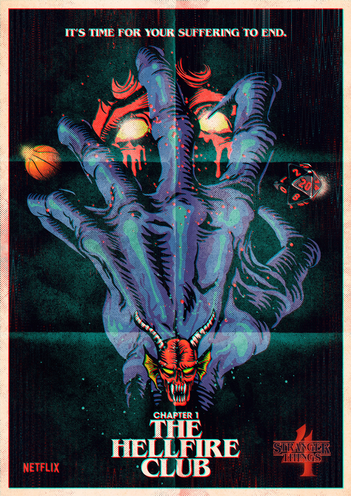
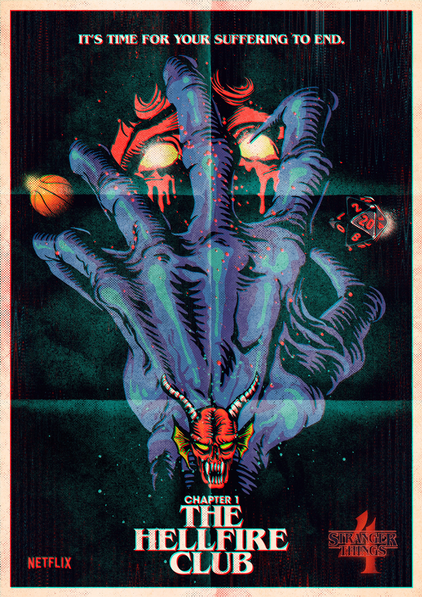

Stranger Things
Description
In 1980s Indiana, a group of young friends witness supernatural
forces and secret government exploits.
As they search for answers, the children unravel a series of
extraordinary mysteries.
Created by : The Duffer Brothers
Release Date : July 2016
Genre : Horror, Horror fiction, Thriller, Drama,
Supernatural, Mystery, Historical drama
Budget : $270 Million (Season 4)
 
